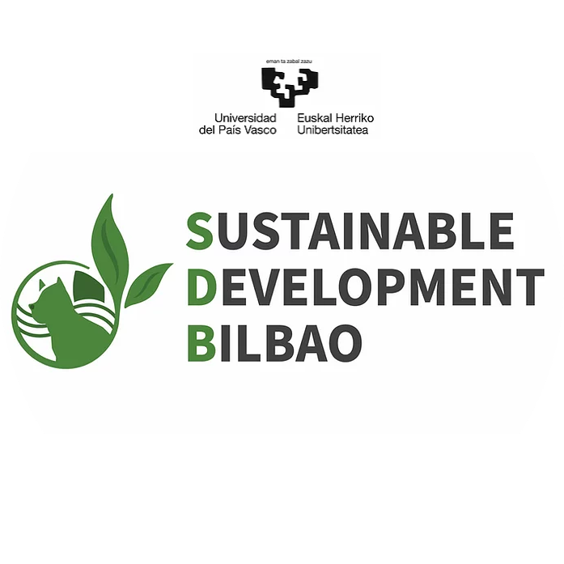

My latest works
At this point I would like to give an overview of previous project experiences in the context of Frontend Development.
Basque Center for Climate Change -
Sustainable Bilbao
Website
Content I Webdesign I Storytelling
